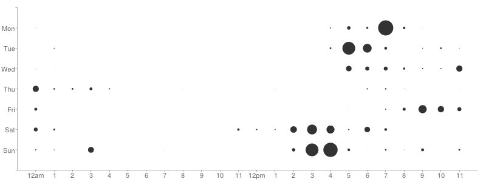

Automatting your front end workflow
Aaron Jorbin
Don't take Notes, go to jorb.in/wcbos2012
We All have Workflows
How am I spending my time?
Paper and Pen
Rescue Time
History

Stolen from Sys Admins
Record your screen
Stolen from UX Researchers
Tools Rock!
CSS with a hint of programming
LESS || SASS || Stylus
Learn to Love the Command Line
DotFile all the things
Dotfiles on Github
If you use it more then never, it should have a config
Engineers have Opinions
cat access.log | cut -d " " -f 7 | sort | uniq -c | sort -n
Tab Complete all the things
.@aaronjorbin has turned on spellcheck in Skype. It's a new era, y'all.
— Helen Hou-Sandí (@helenhousandi) July 11, 2012[autojump]
Script out what you do
commander.js
Git-SVN
git/svn hooks
Take a picture of yourself every commit
Deploy on push to github
If you build it, they will come
Grunt
Hudson/Jenkins
WP Stack
Forge
Brunch
Make your own basic script
watch
Compile Time Defines
Yo man, I just wrote a test for your test
Travis CI
An example of a WordPress plugin using this is WP Document Revisions
jasmine
QUnit
mockjax
mocha
Put your browser to work for you
LiveReload - Free CLI or Pay for a GUI
dotjs
sourcemaps
If you haven't used SourceMaps then you haven't seen Shakespeare the way it was meant to be done.
It doesn't even have to be a real browser
phantomjs

Keep your Code Looking Nice
JS
Autolint
Sublime Linter
Closure Linter
CSS
RECESS
CSS Lint
Closure Stylesheets
Minimize, concatinate and productionify
UglifyJS
Closure Compiler
OptiPNG
JPEGTran
pngquant
trimage
ImageOptim
imagemin
Scour for SVG
htmlcompressor
Enhance CSS
base64 embed images automattically
Sprite? No thanks, I like 7-Up
Glue
Sprite Factory
confess.js
appcache manifest, Simple performance analysis, List of CSS properties
Inliner
yeomin
More Resources
Tooling and the WebApp Development Stack by Paul Irish Deploying: Then & Now